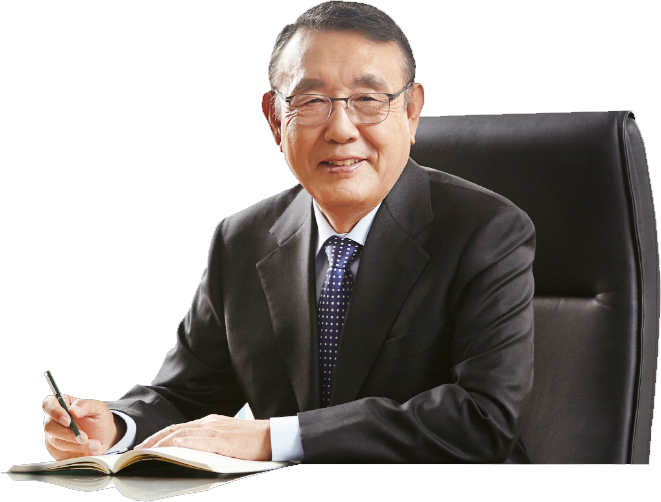

회사소개
고려아연은 세계적인 종합비철금속 제련회사입니다
안녕하십니까?
고려아연 회장 최창근입니다.
고려아연 홈페이지를 방문해 주신 여러분께 감사드립니다.
이번 홈페이지 개편으로 여러분들께 좀 더 가까이 다가가는 고려아연이 되도록 노력하겠습니다.
아연은 우리 실생활과 밀접한 연관이 있습니다.
면도기, 블라인드, 컴퓨터, 가전제품, 핸드폰에서부터 자동차, 건설자재 및 인공위성에 이르기까지
그 용도는 실로 다양하며 우리 삶의 전반에 걸쳐 없어서는 안될 필수적인 존재로 자리매김 해 왔습니다.
고려아연은 1974년 설립되어 현재 호주 Townsville에 위치한
Sun Metals Corporation과 관계사인 영풍 석포 제련소의 생산량을 포함하면
전세계 아연 생산량의 10%에 이르는 글로벌 비철금속 제련 업체입니다.
특히 비철금속제련업은 업종특성상 국제경쟁이 불가피하며
경쟁력을 향상시키기 위해 품질향상을 통한 기술 우위 확보 노력을 계속하고 있습니다.
고려아연의 기술력은 환경 보전과도 밀접한 연관이 있습니다.
실례로 고려아연 대표 기술 중 하나인 친환경원료처리공법은 미래 지향적인 공장의 모범을 제시하고 있으며
생산성은 물론 환경측면에서도 크게 기여하여 과학기술부와 환경부에서
국산신기술(KT)과 환경신기술(ET)인증을 받기도 하였습니다.
고려아연은 투명하고 신뢰받는 기업의 이미지 제고에도 힘쓰고 있습니다.
고려아연은 정확한 회계처리와 정보의 공개로 고객들로부터 투명성을 인정받아 왔으며,
앞으로도 항상 약속을 지키며 사회적인 책임을 다하는 경영을 유지하도록 최선을 다할 것입니다.
이를 바탕으로 앞으로도 고객만족과 인류복지에 기여하는 기업이 될 것임을 약속 드립니다.
여러분께 다시 한번 감사를 드리며 아울러 건강과 행복을 기원합니다.
고려아연 회장 최창근
